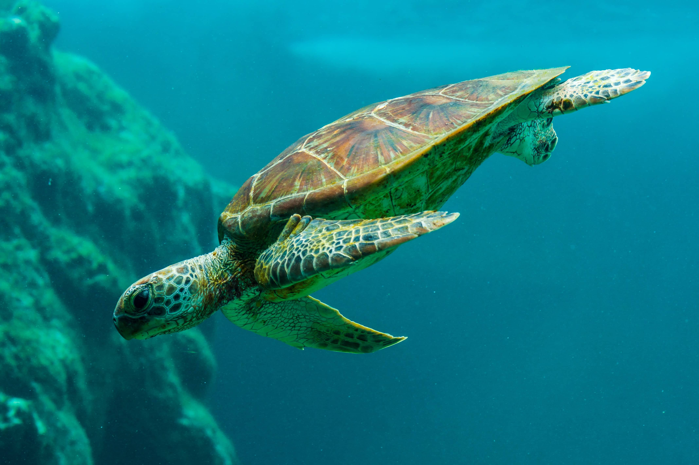

Turtle

The green sea turtle (Chelonia mydas) is a captivating marine species that can be found in the coastal waters of Sri Lanka. Known for their vibrant greenish hue and impressive size, these turtles are a remarkable sight for both locals and tourists. Sri Lanka, with its pristine beaches and warm tropical waters, serves as an ideal habitat for these magnificent creatures.
Along the coast of Sri Lanka, particularly in regions such as Rekawa, Kosgoda, and Pigeon Island, green sea turtles can be observed in their natural environment. These areas are renowned for their turtle conservation projects and provide a sanctuary for nesting and hatching activities. Every year, female green sea turtles return to these shores, driven by their strong nesting instincts. Under the cover of darkness, they laboriously dig nests in the sandy beaches and lay their eggs, ensuring the survival of the species for future generations.
Coastal waters are home to the remarkable leatherback sea turtle (Dermochelys coriacea), adding to the rich marine diversity found in the region. Renowned for their impressive size and distinctive leathery shell, leatherback turtles are the largest of all sea turtles. Sri Lanka, with its warm tropical climate and beautiful beaches, serves as an important nesting ground for these incredible creatures.
Rekawa Beach, located in the southern part of Sri Lanka, is one of the prime nesting sites for leatherback sea turtles.During the nesting season, female leatherbacks emerge from the ocean under the cover of darkness and carefully dig nests in the soft sand. They deposit their eggs before returning to the sea, leaving behind a remarkable natural spectacle.
In addition to Rekawa Beach, other coastal areas such as Pottuvil Point and Bundala National Park are known for occasional leatherback sea turtle sightings. These areas offer opportunities for nature enthusiasts and conservationists to witness the remarkable beauty of these ancient creatures in their natural habitat.
The olive ridley sea turtle is a fascinating species that can also be found in the coastal waters of Sri Lanka. Named after their unique olive-colored carapace, these turtles are known for their remarkable nesting behavior and synchronized mass nesting events, commonly known as "arribadas."
Olive ridley sea turtles can be found nesting in several locations along the coastal areas of Sri Lanka. Rekawa Beach, situated in the southern part of the country, is a prominent nesting site for these magnificent creatures. Other regions such as Kosgoda, Pottuvil and Bentota also serve as nesting grounds for olive ridleys. These coastal areas have implemented conservation efforts to protect the nesting sites and ensure the survival of these endangered turtles. Witnessing the nesting rituals of olive ridleys in these picturesque locations is a remarkable experience.
Along Sri Lanka's picturesque coast, which is celebrated for its incredible biodiversity and awe-inspiring landscapes, the hawksbill turtle (Eretmochelys imbricata) emerges as a fascinating inhabitant. These mesmerizing marine reptiles can be observed in various locations throughout the island nation.
One prominent area to encounter hawksbill turtles is the Pigeon Island National Park. Located off the northeastern coast of Sri Lanka, this protected marine reserve is home to vibrant coral reefs and a flourishing ecosystem. Snorkelers and divers often have the privilege of observing hawksbill turtles gracefully gliding through the crystal-clear waters, feasting on sponges and other marine organisms.
The loggerhead turtle (Caretta caretta) can also be found in the coastal areas in Sri Lanka, adding to the country's rich biodiversity. These captivating creatures, known for their large heads and powerful jaws, can be spotted in several locations along Sri Lanka's coast.
One prominent location where loggerhead turtles can be encountered in Sri Lanka is the Rekawa Beach. Situated on the southeastern coast, this pristine stretch of shoreline serves as a vital nesting site for loggerhead turtles. From October to January, female turtles emerge under the moonlight to lay their eggs in the warm sands. Witnessing this remarkable nesting process is an awe-inspiring experience that highlights the importance of conservation efforts to protect these endangered creatures and their habitats.
Another significant site for loggerhead turtles is the Palk Bay region, located between Sri Lanka and India. This area is known for its diverse marine ecosystem, and it provides a rich foraging ground for loggerheads. The nutrient-rich waters attract an abundance of prey species, ensuring a steady food supply for the turtles.
| Turtle Category | Scientific Name | Mass | Conservation Status | Locations |
|---|---|---|---|---|
| Green Sea Turtle | Chelonia Mydas | 160 kg (Adult) | Endangered | Hikkaduwa, Mirissa, Rekawa, Kosgoda, and Pigeon Island |
| Leatherback | Dermochelys Coriacea | 250 – 700 kg (Adult) | Vulnerable | Pottuvil Point, Bundala National Park, Kosgoda, Mawolla, or Rekawa Beach |
| Olive Ridley | Lepidochelys Olivacea | 36 - 49 kg (Adult) | Vulnerable | Kosgoda, Bentota and Trincomalee Beaches |
| Hawksbill | Eretmochelys Imbricata | ~ 80kg (Adult) | Critically Endangered | Pigeon Island National Park |
| Loggerhead | Caretta Caretta | 160 kg (Adult) | Endangered | Kosgoda, Rekawa, Bundala, Pottuvil and Bentota |
| (Critically Endangered) | Species is considered to be facing an extremely high risk of extinction in the wild | |||
| (Endangered) | Species is considered to be facing a very high risk of extinction in the wild | |||
| (Vulnerable) | Species is considered to be facing a high risk of extinction in the wild | |||